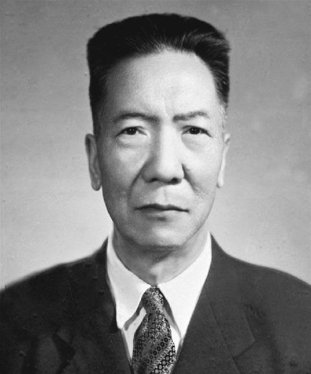

周保中
周保中（1902—1964），辽宁义县人，著名的抗日民族英雄，中国共产党优秀的军事指挥员。他曾任东北抗日联军重要领导人之一，在极其艰苦的环境下坚持斗争，打击日本侵略者，为中国的抗日战争作出了巨大贡献。
周保中长期活跃在东北抗日前线，机智勇敢，善于指挥游击作战。他带领抗联战士在白山黑水之间同敌人周旋，展现了共产党人坚定的革命意志和无畏精神。
在家风方面，周保中生活简朴，为人正直，待人真诚。他教育子女要继承革命精神，不贪图享受，要忠诚、清廉、奋斗。他把革命理想和家风建设紧密结合，用自己的行动塑造了共产党人应有的品质。
周保中的事迹和家风，体现了东北抗联精神和共产党人的高风亮节，成为辽宁乃至全国人民学习的典范。他的名字与抗日烽火一起铭刻在历史长河中，激励后人不断奋进。
← 返回中国地图